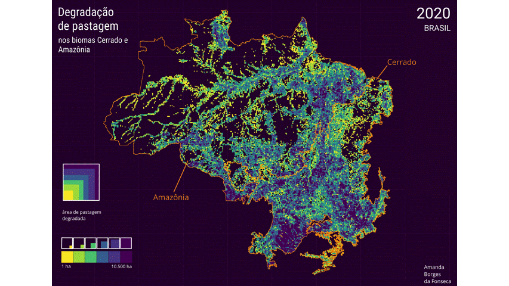
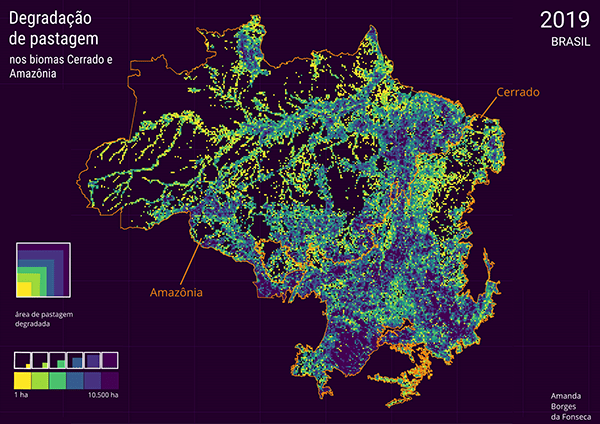
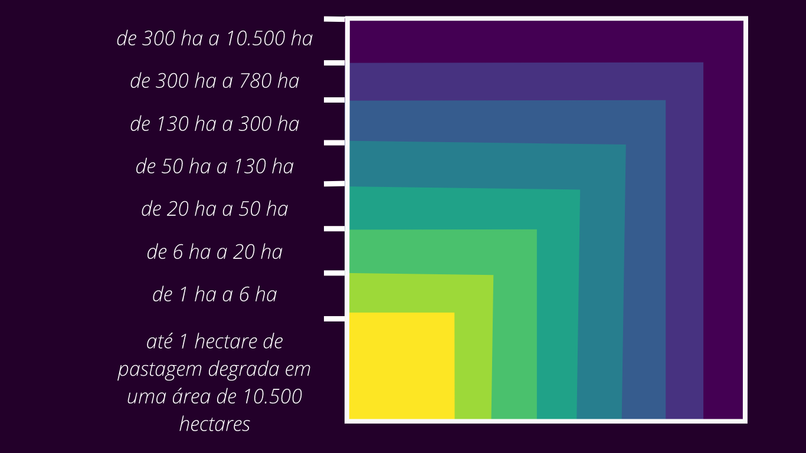

Amanda Borges — portfólio
← voltar

animação · degradação de pastagem nos biomas cerrado e amazônia · 2015–2020


mapa 2019 · escala de dispersão por célula de 10.500 ha · dados mapbiomas qualidade de pastagem